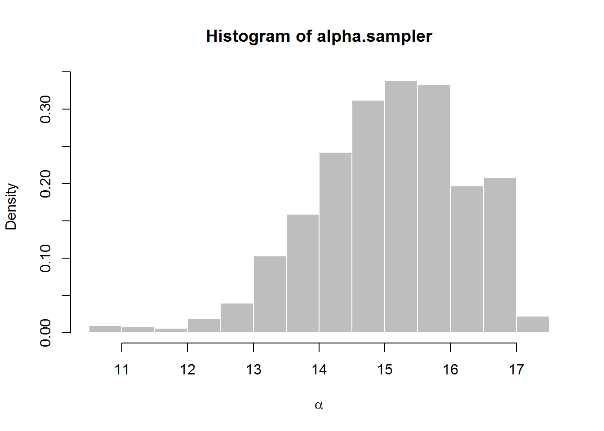
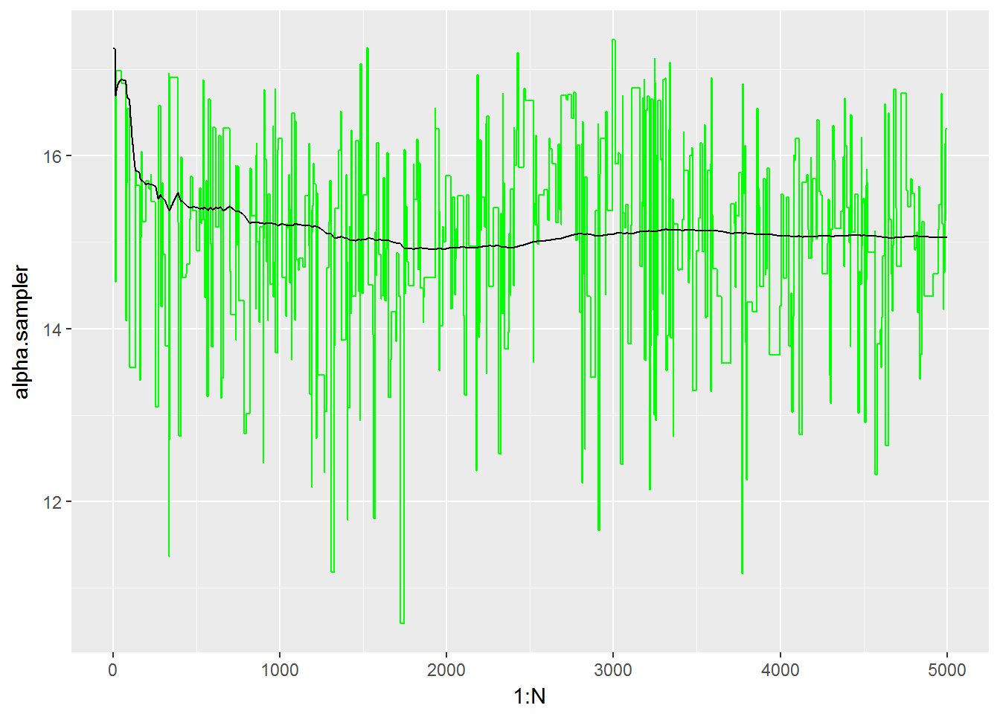
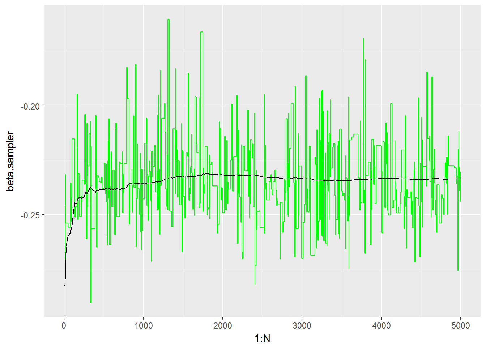
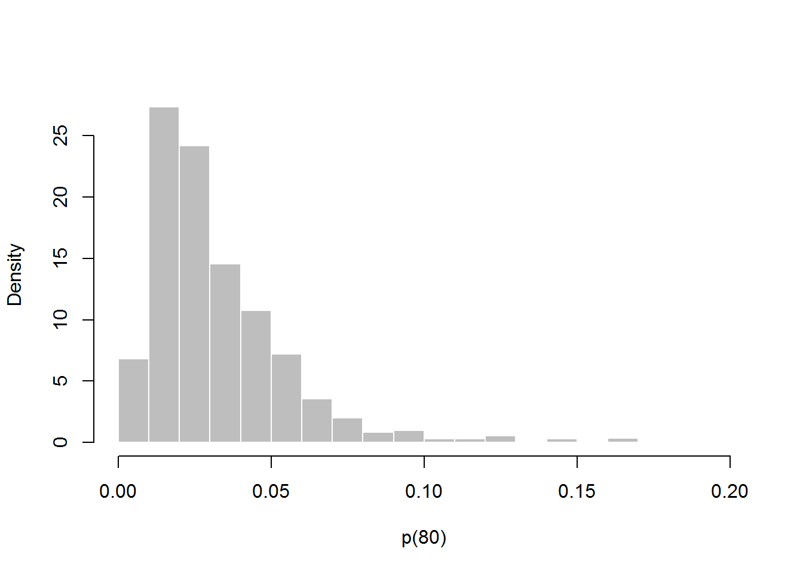
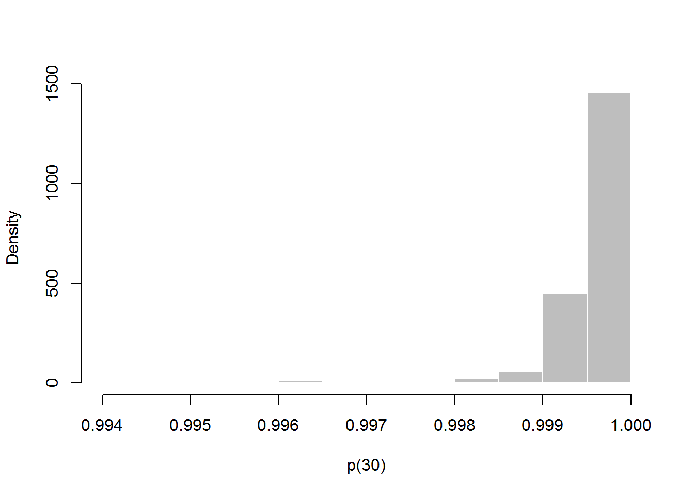

challengerBayesian
AnyelaCamargo
11 March 2018
library(DAAG)
library(knitr)
library(plyr)
library(ggplot2)
source('mcm.R')The Challenger Space Shuttle disaster
On January 28, 1986, the twenty-fifth flight of the U.S. space shuttle program ended in disaster when one of the rocket boosters of the Shuttle Challenger exploded shortly after lift-off, killing all seven crew members. The presidential commission on the accident concluded that it was caused by the failure of an O-ring in a field joint on the rocket booster, and that this failure was due to a faulty design that made the O-ring unacceptably sensitive to a number of factors including outside temperature.
The oring dataset is available in the DAAD package under the name ‘orings’.
summary(orings)## Temperature Erosion Blowby Total
## Min. :53.00 Min. :0.0000 Min. :0.0000 Min. :0.0000
## 1st Qu.:67.00 1st Qu.:0.0000 1st Qu.:0.0000 1st Qu.:0.0000
## Median :70.00 Median :0.0000 Median :0.0000 Median :0.0000
## Mean :69.57 Mean :0.3478 Mean :0.1739 Mean :0.4783
## 3rd Qu.:75.00 3rd Qu.:0.5000 3rd Qu.:0.0000 3rd Qu.:1.0000
## Max. :81.00 Max. :3.0000 Max. :2.0000 Max. :5.0000
## Faults
## Min. :0.0000
## 1st Qu.:0.0000
## Median :0.0000
## Mean :0.3043
## 3rd Qu.:1.0000
## Max. :1.0000where Temperature is O-ring temperature for each test firing or actual launch of the shuttle rocket engine. Erosion is the number of erosion incidents. Blowby is the number of blowby incidents and Total is the total number of incidents. We are going to create a new column (Faults), indicanting whether the event on the row has any (1) or none (0) incidents.
orings <- mutate(orings, Faults = ifelse(Total > 0, 1, 0))
#orings$Faults = as.factor(orings$Faults )
summary(orings)## Temperature Erosion Blowby Total
## Min. :53.00 Min. :0.0000 Min. :0.0000 Min. :0.0000
## 1st Qu.:67.00 1st Qu.:0.0000 1st Qu.:0.0000 1st Qu.:0.0000
## Median :70.00 Median :0.0000 Median :0.0000 Median :0.0000
## Mean :69.57 Mean :0.3478 Mean :0.1739 Mean :0.4783
## 3rd Qu.:75.00 3rd Qu.:0.5000 3rd Qu.:0.0000 3rd Qu.:1.0000
## Max. :81.00 Max. :3.0000 Max. :2.0000 Max. :5.0000
## Faults
## Min. :0.0000
## 1st Qu.:0.0000
## Median :0.0000
## Mean :0.3043
## 3rd Qu.:1.0000
## Max. :1.0000Preliminary output from ML estimation
For a binary response, Y (Faults), with a predictor variable, X (Temperature), logistic regression is a standard. Specifically, Y, given X = x is modeled as a Bernoulli random variable, with success probability p(x), where p(x) satisfies.
model.
p(x) = exp(alpha + beta*x) / (1 + exp(alpha + beta*x))where alpha and beta are the unknown values.
An initial fit of the model on Faults ~ Temperature gives an indication that the probability of O-ring failure increases as the temperature decreases.
logreg.out <- glm(Faults ~ Temperature, family=binomial(logit), data = orings)
summary(logreg.out)##
## Call:
## glm(formula = Faults ~ Temperature, family = binomial(logit),
## data = orings)
##
## Deviance Residuals:
## Min 1Q Median 3Q Max
## -1.0611 -0.7613 -0.3783 0.4524 2.2175
##
## Coefficients:
## Estimate Std. Error z value Pr(>|z|)
## (Intercept) 15.0429 7.3786 2.039 0.0415 *
## Temperature -0.2322 0.1082 -2.145 0.0320 *
## ---
## Signif. codes: 0 '***' 0.001 '**' 0.01 '*' 0.05 '.' 0.1 ' ' 1
##
## (Dispersion parameter for binomial family taken to be 1)
##
## Null deviance: 28.267 on 22 degrees of freedom
## Residual deviance: 20.315 on 21 degrees of freedom
## AIC: 24.315
##
## Number of Fisher Scoring iterations: 5According to this model beta = -0.2322 (P < 0.05) and alpha = 15.0429 (P < 0.05)
pdata <- data.frame(Temperature = seq(min(orings$Temperature),
max(orings$Temperature),len=nrow(orings)))
pdata$Faults = predict(logreg.out, newdata=pdata, type="response")
g <- ggplot(orings, aes(x = Temperature))
g <- g + geom_point(aes(y=Faults), colour="red")
g <- g + geom_line(aes(x = pdata$Temperature, y=pdata$Faults), colour="green")
gExtrapolating to lower temperatures (> 30) indicates that a failure is more likely to happen.
predict(logreg.out, newdata=data.frame(Temperature = c(20:35)), type="response")## 1 2 3 4 5 6 7
## 0.9999696 0.9999616 0.9999516 0.9999389 0.9999230 0.9999028 0.9998774
## 8 9 10 11 12 13 14
## 0.9998454 0.9998050 0.9997541 0.9996898 0.9996088 0.9995066 0.9993777
## 15 16
## 0.9992153 0.9990104We know use a Bayesian approach with a Metropolis-Hastings sampler to investigate the likelihood of the alpha and beta values we inferred from our logistic model.
To start off we use alpha and beta from our initial regression model.
a.mle <- as.numeric(logreg.out$coefficients[1])
b.mle <- as.numeric(logreg.out$coefficients[2])
var.a.mle <- summary(logreg.out)$cov.scaled[1, 1]
var.b.mle <- summary(logreg.out)$cov.scaled[2, 2]
b.mme <- exp(a.mle + 0.577216)Now we run the sample a N number of times and extract alpha and beta for each run.
# Posterior distribution
N <- 5000
B <- 500
x0 <- c(a.mle, b.mle)
sampler.out <- mh(x0, dpost, dprop, rprop, N, B)
alpha.sampler <- sampler.out$x[,1]
beta.sampler <-sampler.out$x[,2]Alpha
Now we plot alpha and beta to look at their distribution. Note that alpha mean falls between [15 : 16]
hist(alpha.sampler, freq=FALSE, col="gray", border="white", xlab=expression(alpha))
ggplot() + geom_line(aes(x= 1:N, y=alpha.sampler), color = 'green') +
geom_line(aes(x= 1:N, y=cumsum(alpha.sampler) / (1:N)))
Beta
and beta means falls between [-0.25 : -0.20]
hist(beta.sampler, freq=FALSE, col="gray", border="white", xlab=expression(beta))
ggplot() + geom_line(aes(x= 1:N, y=beta.sampler), color = 'green') +
geom_line(aes(x= 1:N, y=cumsum(beta.sampler) / (1:N)))
Finally we want to see what is the probability of o-ring failure as the temperature decreases (~30) and increases (~80).
p80 <- 1 - 1 / (1 + exp(alpha.sampler + beta.sampler * 80))
p30 <- 1 - 1 / (1 + exp(alpha.sampler + beta.sampler* 30))
hist(p80, freq=FALSE, col="gray", border="white", xlab="p(80)", main="")
hist(p30, freq=FALSE, col="gray", border="white", xlab="p(30)", main="")
Looking at the histograms we can conclude that the probability of o-ring failure increases as the temperature decreases. This is indicated by skewness of the histograms, P80 towards the right and P30 towards the left.